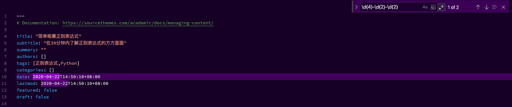
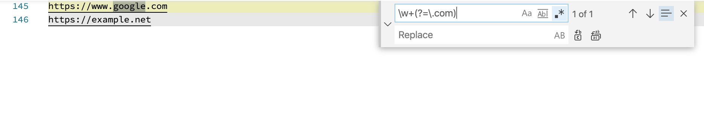
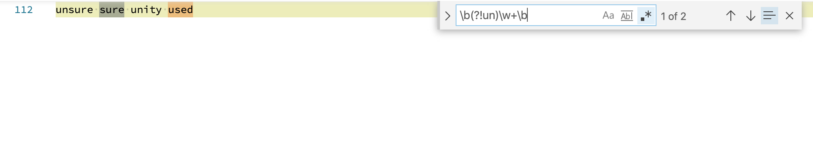
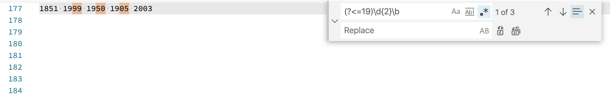
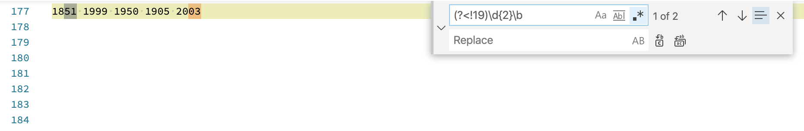

<!DOCTYPE html>
<html lang="zh-Hans">

<head>

  <meta charset="utf-8">
  <meta name="viewport" content="width=device-width, initial-scale=1">
  <meta http-equiv="X-UA-Compatible" content="IE=edge">
  <meta name="generator" content="Source Themes Academic 4.7.0">

  

  
  
  
  
  
    
    
    
  
  

  <meta name="author" content="杜利强">

  
  
  
    
  
  <meta name="description" content="在工作和学习中我时不时会使用正则表达式处理一些文本分析任务，但仍觉得自己是个新手，熟手也算不上。但从现在开始，我想做个这方面的能手，写这篇文章即为开始，也希望能帮助到需要的朋友。写了这篇文章也不意味着我就成能手了，要专于此，路且长漫。俗话说，共欲善其事必先利其器，正则表达式就是这样一个值得利的工具，这篇文章试图提供一个短小简练的正则表达式参考手册。
目录  什么是正则表达式 正则表达式有什么用 正则表达式的构成 需要做进一步解释的正则表达式  特殊标记嵌入 零宽度正预测先行断言 零宽度负预测先行断言 零宽度正回顾后发断言 零宽度负回顾后发断言   链接   什么是正则表达式 正则表达式（简称为regex）是一个由字符和特殊符号组成的字符串模式，它描述了一系列符合某个句法规则的字符串。正则表达式中的特殊符号称之为元字符。以下举几个例子来说明。
 搜索 v.s. 匹配
匹配指的是判断一个字符串能否从开始位置全部或者部分地匹配某个模式。 搜索指的是在目标字符串的任意位置开始搜索匹配的模式。
    正则表达式模式 匹配的字符串     foo foo   Python Python   abc123 abc123    正则表达式有什么用 正则表达式是用来处理字符串的，想知道其有何用，不妨看看它的应用：
 许多文本编辑器、IDEs支持以正则表达式进行查找和替换 许多编程语言支持正则表达式，如C&#43;&#43;，Perl，Python，SQL    在Visual Studio Code中查找本文档里包含的日期   正则表达式的构成 前面已经提到正则表达式由字符和特殊符号组成。
 符号     表示法 描述 正则表达式示例     literal 匹配文本字符串中的字面值literal foo   re1|re2 匹配正则表达式re1或者re2 foo|bar   .">

  
  <link rel="alternate" hreflang="zh-Hans" href="https://keris.github.io/zh/post/pratical-regex-tutorial/">

  


  
  
  
  <meta name="theme-color" content="#4caf50">
  

  
  
  
  <script src="/js/mathjax-config.js"></script>
  

  
  
  
  
    
    <link rel="stylesheet" href="https://cdnjs.cloudflare.com/ajax/libs/academicons/1.8.6/css/academicons.min.css" integrity="sha256-uFVgMKfistnJAfoCUQigIl+JfUaP47GrRKjf6CTPVmw=" crossorigin="anonymous">
    <link rel="stylesheet" href="https://cdnjs.cloudflare.com/ajax/libs/font-awesome/5.11.2/css/all.min.css" integrity="sha256-+N4/V/SbAFiW1MPBCXnfnP9QSN3+Keu+NlB+0ev/YKQ=" crossorigin="anonymous">
    <link rel="stylesheet" href="https://cdnjs.cloudflare.com/ajax/libs/fancybox/3.5.7/jquery.fancybox.min.css" integrity="sha256-Vzbj7sDDS/woiFS3uNKo8eIuni59rjyNGtXfstRzStA=" crossorigin="anonymous">

    
    
    
      
    
    
      
      
        
          <link rel="stylesheet" href="https://cdnjs.cloudflare.com/ajax/libs/highlight.js/9.15.10/styles/github.min.css" crossorigin="anonymous" title="hl-light">
          <link rel="stylesheet" href="https://cdnjs.cloudflare.com/ajax/libs/highlight.js/9.15.10/styles/dracula.min.css" crossorigin="anonymous" title="hl-dark" disabled>
        
      
    

    
    <link rel="stylesheet" href="https://cdnjs.cloudflare.com/ajax/libs/leaflet/1.5.1/leaflet.css" integrity="sha256-SHMGCYmST46SoyGgo4YR/9AlK1vf3ff84Aq9yK4hdqM=" crossorigin="anonymous">
    

    

    
    
      

      
      

      
    
      

      
      

      
    
      

      
      

      
    
      

      
      

      
    
      

      
      

      
    
      

      
      

      
    
      

      
      

      
    
      

      
      

      
    
      

      
      

      
    
      

      
      

      
    
      

      
      

      
        <script src="https://cdnjs.cloudflare.com/ajax/libs/lazysizes/5.1.2/lazysizes.min.js" integrity="sha256-Md1qLToewPeKjfAHU1zyPwOutccPAm5tahnaw7Osw0A=" crossorigin="anonymous" async></script>
      
    
      

      
      

      
    
      

      
      

      
    
      

      
      

      
        <script src="https://cdn.jsdelivr.net/npm/mathjax@3/es5/tex-chtml.js" integrity="" crossorigin="anonymous" async></script>
      
    
      

      
      

      
    

  

  
  
  
  <link rel="stylesheet" href="https://fonts.googleapis.com/css?family=Montserrat:400,700%7CRoboto:400,400italic,700%7CRoboto+Mono&display=swap">
  

  
  
  
  
  <link rel="stylesheet" href="/css/academic.css">

  


  


  

  <link rel="manifest" href="/zh/index.webmanifest">
  <link rel="icon" type="image/png" href="/images/icon_hu0fc6cda6d9ee8f97aed5fca718c40606_62996_32x32_fill_lanczos_center_2.png">
  <link rel="apple-touch-icon" type="image/png" href="/images/icon_hu0fc6cda6d9ee8f97aed5fca718c40606_62996_192x192_fill_lanczos_center_2.png">

  <link rel="canonical" href="https://keris.github.io/zh/post/pratical-regex-tutorial/">

  
  
  
  
  
    
    
  
  
  <meta property="twitter:card" content="summary">
  
  <meta property="twitter:site" content="@duliqiang">
  <meta property="twitter:creator" content="@duliqiang">
  
  <meta property="og:site_name" content="杜利强">
  <meta property="og:url" content="https://keris.github.io/zh/post/pratical-regex-tutorial/">
  <meta property="og:title" content="简单粗暴正则表达式 | 杜利强">
  <meta property="og:description" content="在工作和学习中我时不时会使用正则表达式处理一些文本分析任务，但仍觉得自己是个新手，熟手也算不上。但从现在开始，我想做个这方面的能手，写这篇文章即为开始，也希望能帮助到需要的朋友。写了这篇文章也不意味着我就成能手了，要专于此，路且长漫。俗话说，共欲善其事必先利其器，正则表达式就是这样一个值得利的工具，这篇文章试图提供一个短小简练的正则表达式参考手册。
目录  什么是正则表达式 正则表达式有什么用 正则表达式的构成 需要做进一步解释的正则表达式  特殊标记嵌入 零宽度正预测先行断言 零宽度负预测先行断言 零宽度正回顾后发断言 零宽度负回顾后发断言   链接   什么是正则表达式 正则表达式（简称为regex）是一个由字符和特殊符号组成的字符串模式，它描述了一系列符合某个句法规则的字符串。正则表达式中的特殊符号称之为元字符。以下举几个例子来说明。
 搜索 v.s. 匹配
匹配指的是判断一个字符串能否从开始位置全部或者部分地匹配某个模式。 搜索指的是在目标字符串的任意位置开始搜索匹配的模式。
    正则表达式模式 匹配的字符串     foo foo   Python Python   abc123 abc123    正则表达式有什么用 正则表达式是用来处理字符串的，想知道其有何用，不妨看看它的应用：
 许多文本编辑器、IDEs支持以正则表达式进行查找和替换 许多编程语言支持正则表达式，如C&#43;&#43;，Perl，Python，SQL    在Visual Studio Code中查找本文档里包含的日期   正则表达式的构成 前面已经提到正则表达式由字符和特殊符号组成。
 符号     表示法 描述 正则表达式示例     literal 匹配文本字符串中的字面值literal foo   re1|re2 匹配正则表达式re1或者re2 foo|bar   ."><meta property="og:image" content="https://keris.github.io/images/icon_hu0fc6cda6d9ee8f97aed5fca718c40606_62996_512x512_fill_lanczos_center_2.png">
  <meta property="twitter:image" content="https://keris.github.io/images/icon_hu0fc6cda6d9ee8f97aed5fca718c40606_62996_512x512_fill_lanczos_center_2.png"><meta property="og:locale" content="zh-Hans">
  
    
      <meta property="article:published_time" content="2020-04-22T14:50:10&#43;08:00">
    
    <meta property="article:modified_time" content="2020-04-22T14:50:10&#43;08:00">
  

  


    


  


<script type="application/ld+json">
{
  "@context": "https://schema.org",
  "@type": "BlogPosting",
  "mainEntityOfPage": {
    "@type": "WebPage",
    "@id": "https://keris.github.io/zh/post/pratical-regex-tutorial/"
  },
  "headline": "简单粗暴正则表达式",
  
  "datePublished": "2020-04-22T14:50:10+08:00",
  "dateModified": "2020-04-22T14:50:10+08:00",
  
  "author": {
    "@type": "Person",
    "name": "杜利强"
  },
  
  "publisher": {
    "@type": "Organization",
    "name": "杜利强",
    "logo": {
      "@type": "ImageObject",
      "url": "img/https://keris.github.io/"
    }
  },
  "description": "在工作和学习中我时不时会使用正则表达式处理一些文本分析任务，但仍觉得自己是个新手，熟手也算不上。但从现在开始，我想做个这方面的能手，写这篇文章即为开始，也希望能帮助到需要的朋友。写了这篇文章也不意味着我就成能手了，要专于此，路且长漫。俗话说，共欲善其事必先利其器，正则表达式就是这样一个值得利的工具，这篇文章试图提供一个短小简练的正则表达式参考手册。\n目录  什么是正则表达式 正则表达式有什么用 正则表达式的构成 需要做进一步解释的正则表达式  特殊标记嵌入 零宽度正预测先行断言 零宽度负预测先行断言 零宽度正回顾后发断言 零宽度负回顾后发断言   链接   什么是正则表达式 正则表达式（简称为regex）是一个由字符和特殊符号组成的字符串模式，它描述了一系列符合某个句法规则的字符串。正则表达式中的特殊符号称之为元字符。以下举几个例子来说明。\n 搜索 v.s. 匹配\n匹配指的是判断一个字符串能否从开始位置全部或者部分地匹配某个模式。 搜索指的是在目标字符串的任意位置开始搜索匹配的模式。\n    正则表达式模式 匹配的字符串     foo foo   Python Python   abc123 abc123    正则表达式有什么用 正则表达式是用来处理字符串的，想知道其有何用，不妨看看它的应用：\n 许多文本编辑器、IDEs支持以正则表达式进行查找和替换 许多编程语言支持正则表达式，如C++，Perl，Python，SQL    在Visual Studio Code中查找本文档里包含的日期   正则表达式的构成 前面已经提到正则表达式由字符和特殊符号组成。\n 符号     表示法 描述 正则表达式示例     literal 匹配文本字符串中的字面值literal foo   re1|re2 匹配正则表达式re1或者re2 foo|bar   ."
}
</script>

  

  


  


  


  <title>简单粗暴正则表达式 | 杜利强</title>

</head>

<body id="top" data-spy="scroll" data-offset="70" data-target="#TableOfContents" >

  <aside class="search-results" id="search">
  <div class="container">
    <section class="search-header">

      <div class="row no-gutters justify-content-between mb-3">
        <div class="col-6">
          <h1>搜索</h1>
        </div>
        <div class="col-6 col-search-close">
          <a class="js-search" href="#"><i class="fas fa-times-circle text-muted" aria-hidden="true"></i></a>
        </div>
      </div>

      <div id="search-box">
        
        <input name="q" id="search-query" placeholder="搜索..." autocapitalize="off"
        autocomplete="off" autocorrect="off" spellcheck="false" type="search">
        
      </div>

    </section>
    <section class="section-search-results">

      <div id="search-hits">
        
      </div>

    </section>
  </div>
</aside>


  


<nav class="navbar navbar-expand-lg navbar-light compensate-for-scrollbar" id="navbar-main">
  <div class="container">

    
    <div class="d-none d-lg-inline-flex">
      <a class="navbar-brand" href="/zh/">杜利强</a>
    </div>
    

    
    <button type="button" class="navbar-toggler" data-toggle="collapse"
            data-target="#navbar-content" aria-controls="navbar" aria-expanded="false" aria-label="切换导航">
    <span><i class="fas fa-bars"></i></span>
    </button>
    

    
    <div class="navbar-brand-mobile-wrapper d-inline-flex d-lg-none">
      <a class="navbar-brand" href="/zh/">杜利强</a>
    </div>
    

    
    
    <div class="navbar-collapse main-menu-item collapse justify-content-start" id="navbar-content">

      
      <ul class="navbar-nav d-md-inline-flex">
        

        

        
        
        
          
        

        
        
        
        
        
        
          
          
          
            
          
          
        

        <li class="nav-item">
          <a class="nav-link " href="/zh/#about"><span>关于我</span></a>
        </li>

        
        

        

        
        
        
          
        

        
        
        
        
        
        
          
          
          
            
          
          
        

        <li class="nav-item">
          <a class="nav-link " href="/zh/#posts"><span>博客</span></a>
        </li>

        
        

        

        
        
        
          
        

        
        
        
        
        
        

        <li class="nav-item">
          <a class="nav-link " href="/files/cv-zh.pdf"><span>简历</span></a>
        </li>

        
        

      

        
      </ul>
    </div>

    <ul class="nav-icons navbar-nav flex-row ml-auto d-flex pl-md-2">
      
      <li class="nav-item">
        <a class="nav-link js-search" href="#"><i class="fas fa-search" aria-hidden="true"></i></a>
      </li>
      

      
      <li class="nav-item">
        <a class="nav-link js-dark-toggle" href="#"><i class="fas fa-moon" aria-hidden="true"></i></a>
      </li>
      

      

    </ul>

  </div>
</nav>


  <article class="article">

  


  

  
  
  
<div class="article-container pt-3">
  <h1>简单粗暴正则表达式</h1>

  
  <p class="page-subtitle">在30分钟内了解正则表达式的方方面面</p>
  

  
    


<div class="article-metadata">

  
  

  
  <span class="article-date">
    
    
      
    
    Apr 22, 2020
  </span>
  

  

  
  <span class="middot-divider"></span>
  <span class="article-reading-time">
    2 分钟阅读时长
  </span>
  

  
  
  
  <span class="middot-divider"></span>
  <a href="/zh/post/pratical-regex-tutorial/#disqus_thread"></a>
  

  
  

</div>

    


  
</div>


  <div class="article-container">

    <div class="article-style">
      <p>在工作和学习中我时不时会使用正则表达式处理一些文本分析任务，但仍觉得自己是个新手，熟手也算不上。但从现在开始，我想做个这方面的能手，写这篇文章即为开始，也希望能帮助到需要的朋友。写了这篇文章也不意味着我就成能手了，要专于此，路且长漫。俗话说，共欲善其事必先利其器，正则表达式就是这样一个值得利的工具，这篇文章试图提供一个短小简练的正则表达式参考手册。</p>
<h2>目录</h2>
<nav id="TableOfContents">
  <ul>
    <li><a href="#什么是正则表达式">什么是正则表达式</a></li>
    <li><a href="#正则表达式有什么用">正则表达式有什么用</a></li>
    <li><a href="#正则表达式的构成">正则表达式的构成</a></li>
    <li><a href="#需要做进一步解释的正则表达式">需要做进一步解释的正则表达式</a>
      <ul>
        <li><a href="#特殊标记嵌入">特殊标记嵌入</a></li>
        <li><a href="#零宽度正预测先行断言">零宽度正预测先行断言</a></li>
        <li><a href="#零宽度负预测先行断言">零宽度负预测先行断言</a></li>
        <li><a href="#零宽度正回顾后发断言">零宽度正回顾后发断言</a></li>
        <li><a href="#零宽度负回顾后发断言">零宽度负回顾后发断言</a></li>
      </ul>
    </li>
    <li><a href="#链接">链接</a></li>
  </ul>
</nav>
<h2 id="什么是正则表达式">什么是正则表达式</h2>
<p>正则表达式（简称为<em>regex</em>）是一个由字符和特殊符号组成的字符串模式，它描述了一系列符合某个句法规则的字符串。正则表达式中的特殊符号称之为元字符。以下举几个例子来说明。</p>
<blockquote>
<p>搜索 v.s. 匹配</p>
<p>匹配指的是判断一个字符串能否从开始位置全部或者部分地匹配某个模式。
搜索指的是在目标字符串的任意位置开始搜索匹配的模式。</p>
</blockquote>
<table>
<thead>
<tr>
<th>正则表达式模式</th>
<th>匹配的字符串</th>
</tr>
</thead>
<tbody>
<tr>
<td>foo</td>
<td>foo</td>
</tr>
<tr>
<td>Python</td>
<td>Python</td>
</tr>
<tr>
<td>abc123</td>
<td>abc123</td>
</tr>
</tbody>
</table>
<h2 id="正则表达式有什么用">正则表达式有什么用</h2>
<p>正则表达式是用来处理字符串的，想知道其有何用，不妨看看它的应用：</p>
<ul>
<li>许多文本编辑器、IDEs支持以正则表达式进行查找和替换</li>
<li>许多编程语言支持正则表达式，如C++，Perl，Python，SQL</li>
</ul>


<figure>


  <a data-fancybox="" href="vscode-find-date.png" data-caption="在Visual Studio Code中查找本文档里包含的日期">
</a>


  
  
  <figcaption data-pre="图" data-post=":" class="numbered">
    在Visual Studio Code中查找本文档里包含的日期
  </figcaption>


</figure>

<h2 id="正则表达式的构成">正则表达式的构成</h2>
<p>前面已经提到正则表达式由字符和特殊符号组成。</p>
<ul>
<li>符号</li>
</ul>
<table>
<thead>
<tr>
<th>表示法</th>
<th>描述</th>
<th>正则表达式示例</th>
</tr>
</thead>
<tbody>
<tr>
<td><code>literal</code></td>
<td>匹配文本字符串中的字面值<em>literal</em></td>
<td><code>foo</code></td>
</tr>
<tr>
<td><code>re1|re2</code></td>
<td>匹配正则表达式re1或者re2</td>
<td><code>foo|bar</code></td>
</tr>
<tr>
<td><code>.</code></td>
<td>匹配任何字符（除了<code>\n</code>）</td>
<td><code>b.b</code></td>
</tr>
<tr>
<td><code>^</code></td>
<td>匹配字符串开始部分</td>
<td><code>^Dear</code></td>
</tr>
<tr>
<td><code>$</code></td>
<td>匹配字符串终止部分</td>
<td><code>/bin/.*sh$</code></td>
</tr>
<tr>
<td><code>*</code></td>
<td>匹配0次或者多次前面的正则表达式</td>
<td><code>[A-Za-z0-9]*</code></td>
</tr>
<tr>
<td><code>+</code></td>
<td>匹配1次或者多次前面的正则表达式</td>
<td><code>[a-z]+\.com</code></td>
</tr>
<tr>
<td><code>?</code></td>
<td>匹配0次或者1次前面的正则表达式</td>
<td><code>goo?</code></td>
</tr>
<tr>
<td><code>{n}</code></td>
<td>匹配n次前面的正则表达式</td>
<td><code>[0-9]{3}</code></td>
</tr>
<tr>
<td><code>{m,n}</code></td>
<td>匹配m~n次前面的正则表达式</td>
<td><code>[0-9]{5,9}</code></td>
</tr>
<tr>
<td><code>[...]</code></td>
<td>匹配来自字符集的任意单一字符</td>
<td><code>[aeiou]</code></td>
</tr>
<tr>
<td><code>[..x-y..]</code></td>
<td>匹配x~y范围中的任意单一字符</td>
<td><code>[0-9], [a-zA-Z]</code></td>
</tr>
<tr>
<td><code>[^...]</code></td>
<td>不匹配来自字符集的任一字符</td>
<td><code>[^aeiou], [^0-9A-Za-z]</code></td>
</tr>
<tr>
<td><code>(*|+|?{})?</code></td>
<td>非贪婪版本</td>
<td><code>.*?[a-z]</code></td>
</tr>
<tr>
<td><code>(...)</code></td>
<td>匹配封闭的正则表达式，然后另存为子组</td>
<td><code>([0-9]{3})?, f(oo|u)bar</code></td>
</tr>
</tbody>
</table>
<ul>
<li>特殊符号</li>
</ul>
<blockquote>
<p>以下特殊字符（<strong>前四个</strong>）的大写形式对应相反的含义。</p>
</blockquote>
<table>
<thead>
<tr>
<th>表示法</th>
<th>描述</th>
<th>正则表达式示例</th>
</tr>
</thead>
<tbody>
<tr>
<td><code>\d</code></td>
<td>等同于<code>[0-9]</code></td>
<td><code>data\d+.txt</code></td>
</tr>
<tr>
<td><code>\w</code></td>
<td>等同于<code>[0-9a-zA-Z_]</code></td>
<td><code>[A-Za-z]\w+</code></td>
</tr>
<tr>
<td><code>\s</code></td>
<td>等同于<code>[\n\t\r\v\f]</code></td>
<td><code>of\sthe</code></td>
</tr>
<tr>
<td><code>\b</code></td>
<td>匹配任何单词边界</td>
<td><code>\bThe\b</code></td>
</tr>
<tr>
<td><code>\N</code></td>
<td>反向引用已保存的子组</td>
<td><code>price;\1</code></td>
</tr>
<tr>
<td><code>\c</code></td>
<td>逐字匹配任何特殊字符c</td>
<td><code>\.,\\,\*</code></td>
</tr>
<tr>
<td><code>\A(\Z)</code></td>
<td>等同于<code>^($)</code></td>
<td><code>\ADear</code></td>
</tr>
</tbody>
</table>
<ul>
<li>扩展表示法</li>
</ul>
<table>
<thead>
<tr>
<th>表示法</th>
<th>描述</th>
<th>正则表达式示例</th>
</tr>
</thead>
<tbody>
<tr>
<td><code>(?iLmsux)</code></td>
<td>在正则表达式中嵌入一个或多个特殊“标记”参数</td>
<td><code>(?x), (? im)</code></td>
</tr>
<tr>
<td><code>(?:...)</code></td>
<td>表示一个匹配不用保存的分组</td>
<td><code>(?:\w+\.)*</code></td>
</tr>
<tr>
<td><code>(?P&lt;name&gt;...)</code></td>
<td>表示仅由name标识而不是数字ID标识的正则分组匹配</td>
<td><code>(?P&lt;data&gt;)</code></td>
</tr>
<tr>
<td><code>(?P=name)</code></td>
<td>在同一个字符串中匹配由<code>(?P&lt;name&gt;)</code>分组的之前的文本</td>
<td><code>(?P=data)</code></td>
</tr>
<tr>
<td><code>(?#...)</code></td>
<td>表示注释</td>
<td><code>(?#comment)</code></td>
</tr>
<tr>
<td><code>(?=...)</code></td>
<td>零宽度正预测先行断言</td>
<td><code>(?=\.com)</code></td>
</tr>
<tr>
<td><code>(?!...)</code></td>
<td>零宽度负预测先行断言</td>
<td><code>(?!\.net)</code></td>
</tr>
<tr>
<td><code>(?&lt;=...)</code></td>
<td>零宽度正回顾后发断言</td>
<td><code>(?&lt;=800-)</code></td>
</tr>
<tr>
<td><code>(?&lt;!...)</code></td>
<td>零宽度负回顾后发断言</td>
<td><code>(?&lt;!192\.168\.)</code></td>
</tr>
<tr>
<td><code>(?(id/name)Y|N)</code></td>
<td>如果分组提供的id或者name存在，就返回正则表达式的条件匹配Y，否则返回N</td>
<td><code>(?x), (? im)</code></td>
</tr>
</tbody>
</table>
<h2 id="需要做进一步解释的正则表达式">需要做进一步解释的正则表达式</h2>
<p>在上一部分，我们了解了正则表达式的构成，其中有些需要做进一步的解释。</p>
<h3 id="特殊标记嵌入">特殊标记嵌入</h3>
<p>除了在<code>re.compile</code>中传递<code>flags</code>参数，我们可以利用<code>(?iLmsux)</code>来嵌入特殊标记。以下举几个例子：</p>
<pre><code class="language-python">&gt;&gt;&gt; re.findall(r'(?i)yes', 'yes? Yes. YES!!')
['yes', 'Yes', 'YES']
</code></pre>
<p>在这个例子中，通过<code>(?i)</code>实现了不区分大小写的正则搜索。</p>
<p>再看一个支持多行并且不区分大小写的正则搜索例子：</p>
<pre><code class="language-python">&gt;&gt;&gt; re.findall(r'(?im)^th[\w ]+', &quot;&quot;&quot;
... This line is the first,
... another line,
... that line, it's the best
...&quot;&quot;&quot;)
['This line is the first', 'that line']
</code></pre>
<h3 id="零宽度正预测先行断言">零宽度正预测先行断言</h3>
<p>零宽度正预测先行断言即<code>(?=...)</code>。举个例子加以说明。</p>
<p>对正则表达式<code>(?=\.com)</code>而言，如果一个字符串后面<strong>跟着</strong><code>.com</code>才做匹配操作，否则不进行。</p>
<pre><code class="language-python">&gt;&gt;&gt; re.findall(r'(?m)\w+(?=\.com)', &quot;&quot;&quot;
... https://www.google.com
... https://example.net
... &quot;&quot;&quot;)
['google']
</code></pre>


<figure>


  <a data-fancybox="" href="followed-by-dotcom.png" data-caption="仅匹配后面跟着.com的字符串">
</a>


  
  
  <figcaption data-pre="图" data-post=":" class="numbered">
    仅匹配后面跟着.com的字符串
  </figcaption>


</figure>

<h3 id="零宽度负预测先行断言">零宽度负预测先行断言</h3>
<p>零宽度负预测先行断言即<code>(?!...)</code>。举个例子加以说明。</p>
<p>对正则表达式<code>\b(?!un)\w+\b</code>而言，如果一个单词的开始后面<strong>没有跟着</strong><code>un</code>才做匹配操作，否则不进行。</p>
<pre><code class="language-python">&gt;&gt;&gt; re.findall(r'\b(?!un)\w+\b', 'unsure sure unity used')
['sure', 'used']
</code></pre>


<figure>


  <a data-fancybox="" href="unfollowed-by-un.png" data-caption="仅匹配单词开始后没有跟着un的字符串">
</a>


  
  
  <figcaption data-pre="图" data-post=":" class="numbered">
    仅匹配单词开始后没有跟着un的字符串
  </figcaption>


</figure>

<h3 id="零宽度正回顾后发断言">零宽度正回顾后发断言</h3>
<p>零宽度正回顾后发断言即<code>(?&lt;=...)</code>。举个例子以说明。</p>
<p>对于正则表达式<code>(?&lt;=19)\d{2}\b</code>而言，如果某个四位数字以19开始，则进行匹配，否则不进行。</p>
<pre><code class="language-python">&gt;&gt;&gt; re.findall(r'(?&lt;=19)\d{2}\b', '1851 1999 1950 1905 2003')
['99', '50', '05']
</code></pre>


<figure>


  <a data-fancybox="" href="preceded-by-19.png" data-caption="仅对以19开始的四位数字进行匹配操作">
</a>


  
  
  <figcaption data-pre="图" data-post=":" class="numbered">
    仅对以19开始的四位数字进行匹配操作
  </figcaption>


</figure>

<h3 id="零宽度负回顾后发断言">零宽度负回顾后发断言</h3>
<p>零宽度负回顾后发断言即<code>(?&lt;!...)</code>。举个例子以说明。</p>
<p>对于正则表达式<code>(?&lt;!19)\d{2}\b</code>而言，如果某个四位数字不以19开始，则进行匹配，否则不进行。</p>
<pre><code class="language-python">&gt;&gt;&gt; re.findall(r'(?&lt;=19)\d{2}\b', '1851 1999 1950 1905 2003')
['51', '03']
</code></pre>


<figure>


  <a data-fancybox="" href="not-preceded-by-19.png" data-caption="仅对不以19开始的四位数字进行匹配操作">
</a>


  
  
  <figcaption data-pre="图" data-post=":" class="numbered">
    仅对不以19开始的四位数字进行匹配操作
  </figcaption>


</figure>

<h2 id="链接">链接</h2>
<ul>
<li><a href="https://docs.microsoft.com/zh-cn/dotnet/standard/base-types/regular-expression-language-quick-reference?redirectedfrom=MSDN">微软：正则表达式语言-快速参考</a></li>
<li><a href="https://www.jb51.net/tools/zhengze.html">脚本之家：正则表达式30分钟入门教程</a></li>
</ul>

    </div>

    


<div class="article-tags">
  
  <a class="badge badge-light" href="">正则表达式</a>
  
  <a class="badge badge-light" href="/zh/tags/python/">Python</a>
  
</div>


<div class="share-box" aria-hidden="true">
  <ul class="share">
    
      
      
      
        
      
      
      
      <li>
        <a href="https://twitter.com/intent/tweet?url=https://keris.github.io/zh/post/pratical-regex-tutorial/&amp;text=%e7%ae%80%e5%8d%95%e7%b2%97%e6%9a%b4%e6%ad%a3%e5%88%99%e8%a1%a8%e8%be%be%e5%bc%8f" target="_blank" rel="noopener" class="share-btn-twitter">
          <i class="fab fa-twitter"></i>
        </a>
      </li>
    
      
      
      
        
      
      
      
      <li>
        <a href="https://www.facebook.com/sharer.php?u=https://keris.github.io/zh/post/pratical-regex-tutorial/&amp;t=%e7%ae%80%e5%8d%95%e7%b2%97%e6%9a%b4%e6%ad%a3%e5%88%99%e8%a1%a8%e8%be%be%e5%bc%8f" target="_blank" rel="noopener" class="share-btn-facebook">
          <i class="fab fa-facebook"></i>
        </a>
      </li>
    
      
      
      
        
      
      
      
      <li>
        <a href="https://service.weibo.com/share/share.php?url=https://keris.github.io/zh/post/pratical-regex-tutorial/&amp;title=%e7%ae%80%e5%8d%95%e7%b2%97%e6%9a%b4%e6%ad%a3%e5%88%99%e8%a1%a8%e8%be%be%e5%bc%8f" target="_blank" rel="noopener" class="share-btn-weibo">
          <i class="fab fa-weibo"></i>
        </a>
      </li>
    
  </ul>
</div>


  


  
  
  
    
  
  
  <div class="media author-card content-widget-hr">
    
      
      
    

    <div class="media-body">
      <h5 class="card-title"><a href="https://keris.github.io/">杜利强</a></h5>
      <h6 class="card-subtitle">算法工程师</h6>
      <p class="card-text">程序员、作家。</p>
      <ul class="network-icon" aria-hidden="true">
  
    
    
    
      
    
    
    
    
    
      
    
    <li>
      <a href="https://weibo.com/1855772372" target="_blank" rel="noopener">
        <i class="fab fa-weibo"></i>
      </a>
    </li>
  
    
    
    
      
    
    
    
    
    
      
    
    <li>
      <a href="https://github.com/keris" target="_blank" rel="noopener">
        <i class="fab fa-github"></i>
      </a>
    </li>
  
    
    
    
    
    
    
    
      
    
    <li>
      <a href="/files/cv-zh.pdf" >
        <i class="ai ai-cv"></i>
      </a>
    </li>
  
</ul>

    </div>
  </div>


<section id="comments">
  
    
<div id="disqus_thread"></div>
<script>
  let disqus_config = function () {
    
    
    
  };
  (function() {
    if (["localhost", "127.0.0.1"].indexOf(window.location.hostname) != -1) {
      document.getElementById('disqus_thread').innerHTML = 'Disqus comments not available by default when the website is previewed locally.';
      return;
    }
    var d = document, s = d.createElement('script'); s.async = true;
    s.src = 'https://' + "duliqiang" + '.disqus.com/embed.js';
    s.setAttribute('data-timestamp', +new Date());
    (d.head || d.body).appendChild(s);
  })();
</script>
<noscript>Please enable JavaScript to view the <a href="https://disqus.com/?ref_noscript">comments powered by Disqus.</a></noscript>
<a href="https://disqus.com" class="dsq-brlink">comments powered by <span class="logo-disqus">Disqus</span></a>


  
</section>


  
  
  <div class="article-widget content-widget-hr">
    <h3>相关</h3>
    <ul>
      
      <li><a href="/zh/post/coin-toss-experiment/">硬币投掷模拟实验</a></li>
      
    </ul>
  </div>
  


  </div>
</article>

      

    
    
    
      <script src="https://cdnjs.cloudflare.com/ajax/libs/jquery/3.4.1/jquery.min.js" integrity="sha256-CSXorXvZcTkaix6Yvo6HppcZGetbYMGWSFlBw8HfCJo=" crossorigin="anonymous"></script>
      <script src="https://cdnjs.cloudflare.com/ajax/libs/jquery.imagesloaded/4.1.4/imagesloaded.pkgd.min.js" integrity="sha256-lqvxZrPLtfffUl2G/e7szqSvPBILGbwmsGE1MKlOi0Q=" crossorigin="anonymous"></script>
      <script src="https://cdnjs.cloudflare.com/ajax/libs/jquery.isotope/3.0.6/isotope.pkgd.min.js" integrity="sha256-CBrpuqrMhXwcLLUd5tvQ4euBHCdh7wGlDfNz8vbu/iI=" crossorigin="anonymous"></script>
      <script src="https://cdnjs.cloudflare.com/ajax/libs/fancybox/3.5.7/jquery.fancybox.min.js" integrity="sha256-yt2kYMy0w8AbtF89WXb2P1rfjcP/HTHLT7097U8Y5b8=" crossorigin="anonymous"></script>

      
        <script src="https://cdnjs.cloudflare.com/ajax/libs/mermaid/8.4.3/mermaid.min.js" integrity="" crossorigin="anonymous" title="mermaid"></script>
      

      
        
        <script src="https://cdnjs.cloudflare.com/ajax/libs/highlight.js/9.15.10/highlight.min.js" integrity="sha256-1zu+3BnLYV9LdiY85uXMzii3bdrkelyp37e0ZyTAQh0=" crossorigin="anonymous"></script>
        
        <script src="https://cdnjs.cloudflare.com/ajax/libs/highlight.js/9.15.10/languages/r.min.js"></script>
        
        <script src="https://cdnjs.cloudflare.com/ajax/libs/highlight.js/9.15.10/languages/python.min.js"></script>
        
        <script src="https://cdnjs.cloudflare.com/ajax/libs/highlight.js/9.15.10/languages/c&#43;&#43;.min.js"></script>
        
        <script src="https://cdnjs.cloudflare.com/ajax/libs/highlight.js/9.15.10/languages/c.min.js"></script>
        
      

    

    
    
      <script src="https://cdnjs.cloudflare.com/ajax/libs/leaflet/1.5.1/leaflet.js" integrity="sha256-EErZamuLefUnbMBQbsEqu1USa+btR2oIlCpBJbyD4/g=" crossorigin="anonymous"></script>
    

    
    
    <script>const code_highlighting = true;</script>
    

    
    
    
    
    
    
    <script>
      const search_config = {"indexURI":"/zh/index.json","minLength":1,"threshold":0.3};
      const i18n = {"no_results":"没有找到结果","placeholder":"搜索...","results":"搜索结果"};
      const content_type = {
        'post': "文章",
        'project': "项目",
        'publication' : "出版物",
        'talk' : "演讲"
        };
    </script>
    

    
    

    
    
    <script id="search-hit-fuse-template" type="text/x-template">
      <div class="search-hit" id="summary-{{key}}">
      <div class="search-hit-content">
        <div class="search-hit-name">
          <a href="{{relpermalink}}">{{title}}</a>
          <div class="article-metadata search-hit-type">{{type}}</div>
          <p class="search-hit-description">{{snippet}}</p>
        </div>
      </div>
      </div>
    </script>
    

    
    
    <script src="https://cdnjs.cloudflare.com/ajax/libs/fuse.js/3.2.1/fuse.min.js" integrity="sha256-VzgmKYmhsGNNN4Ph1kMW+BjoYJM2jV5i4IlFoeZA9XI=" crossorigin="anonymous"></script>
    <script src="https://cdnjs.cloudflare.com/ajax/libs/mark.js/8.11.1/jquery.mark.min.js" integrity="sha256-4HLtjeVgH0eIB3aZ9mLYF6E8oU5chNdjU6p6rrXpl9U=" crossorigin="anonymous"></script>
    

    
    

    
    
    <script id="dsq-count-scr" src="https://duliqiang.disqus.com/count.js" async></script>
    

    
    
    
    
    
    
    
    
    
      
    
    
    
    
    <script src="/js/academic.min.a0d331bcd05dbe8b31e244f796710f08.js"></script>

    


  
  
  <div class="container">
    <footer class="site-footer">
  

  <p class="powered-by">
    

    Powered by the
    <a href="https://sourcethemes.com/academic/" target="_blank" rel="noopener">Academic theme</a> for
    <a href="https://gohugo.io" target="_blank" rel="noopener">Hugo</a>.

    
    <span class="float-right" aria-hidden="true">
      <a href="#" class="back-to-top">
        <span class="button_icon">
          <i class="fas fa-chevron-up fa-2x"></i>
        </span>
      </a>
    </span>
    
  </p>
</footer>

  </div>
  

  
<div id="modal" class="modal fade" role="dialog">
  <div class="modal-dialog">
    <div class="modal-content">
      <div class="modal-header">
        <h5 class="modal-title">引用</h5>
        <button type="button" class="close" data-dismiss="modal" aria-label="Close">
          <span aria-hidden="true">&times;</span>
        </button>
      </div>
      <div class="modal-body">
        <pre><code class="tex hljs"></code></pre>
      </div>
      <div class="modal-footer">
        <a class="btn btn-outline-primary my-1 js-copy-cite" href="#" target="_blank">
          <i class="fas fa-copy"></i> 复制
        </a>
        <a class="btn btn-outline-primary my-1 js-download-cite" href="#" target="_blank">
          <i class="fas fa-download"></i> 下载
        </a>
        <div id="modal-error"></div>
      </div>
    </div>
  </div>
</div>

</body>
</html>
